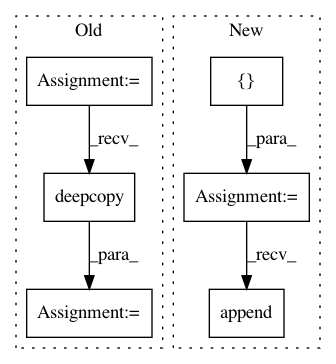

db81c237129d5f6f300d9c9e8a6e0be693d61119,pygsp/filters/filter.py,Filter,can_dual,#Filter#,447
Before Change
ret = s[:, n]
return ret
gdual = copy.deepcopy(self)
for i in range(self.Nf):
gdual.g[i] = lambda x, ind=i: can_dual_func(self, ind,
copy.deepcopy(x))
After Change
ret = s[:, n]
return ret
kernels = []
for i in range(self.Nf):
kernels.append(lambda x, i=i: can_dual_func(self, i, x))
return Filter(self.G, kernels)
def plot(self, **kwargs):
In pattern: SUPERPATTERN
Frequency: 3
Non-data size: 6
Instances
Project Name: epfl-lts2/pygsp
Commit Name: db81c237129d5f6f300d9c9e8a6e0be693d61119
Time: 2017-09-01
Author: michael.defferrard@epfl.ch
File Name: pygsp/filters/filter.py
Class Name: Filter
Method Name: can_dual
Project Name: nilmtk/nilmtk
Commit Name: 1f32f952d84f0d44fcfe03367d3834d2464b63a0
Time: 2018-04-22
Author: 10246101+PMeira@users.noreply.github.com
File Name: nilmtk/disaggregate/combinatorial_optimisation.py
Class Name: CombinatorialOptimisation
Method Name: export_model
Project Name: CamDavidsonPilon/lifelines
Commit Name: b1d839cb8e521c3cf2efaebe17082f1a9680a253
Time: 2020-05-13
Author: cam.davidson.pilon@gmail.com
File Name: experiments/working_npmle.py
Class Name:
Method Name: create_turnball_intervals